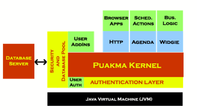

The Puakma server core is written in 100% Java. This means it will run on any platform with a Java 1.4 JVM, allow for it to be used on a vast range of hardware and devices. It has an incredibly small footprint (less than 400Kb for the Puakma core). Both the small footprint and ability to run on a variety of hardware allow the server to scale exceptionally well.
Puakma is designed to be middleware. It acts a little like glue in any environment, binding together legacy systems so that they appear to be a part of one seamless environment. This thinking is currently a little against the grain, since most vendors are pushing for ubiquitous environments. Since the glue analogy allows customers to utilize their existing systems and platforms, Puakma is able to blend in, without causing a major rewrite of these systems.
The Puakma server is really just a common container for many kinds of addins.
A server addin may perform any task, maintain its own sockets and clients (such
as the HTTP addin), schedule tasks (such as the AGENDA task) or send SMTP mail.
This BlackBook will primarily discuss the HTTP addin and its features. This component
based architecture means that any developer may write their own addins to extend
the server base, and ensures the base server is somewhat “future-proofed” as new
and emerging technologies may be easily added.
